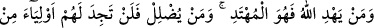
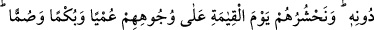
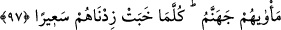

câhillerin kendi cinslerinden kâmil bir insanın peygamber olarak gönderilmesini
imkânsız görmelerine ve melekleri beşer cinsinden daha üstün kabul ettiklerine işâret
edilmektedir. Oysa Allah melekleri ona secde ettirmiş, ona hilâfet sırrını tevdî etmiştir.
Şâyet melek dünyada hilâfete ehil olsaydı Allah meleklerin içinden bir peygamber
gönderirdi. Bu insanın peygamberliğe, hilâfete ve hükümdarlığa ehil olduğunun
delilidir.
97. Allah kime hidâyet verirse, işte doğru yolu bulan odur; kimi de hidâyetten
uzak tutarsa, artık onlara, Allah’tan başka dostlar bulamazsın. Kıyâmet gününde
onları kör, dilsiz ve sağır bir halde yüzükoyun haşrederiz. Onların varacağı ve
kalacağı yer cehennemdir ki, ateşi yavaşladıkça onun alevini artırırız.
“Allah kime hidâyet verirse” yâni onda hakka yönelmeyi yaratırsa. Kâşifî şöyle der:
“Cenâb-ı Hak kime yol gösterir, yâni onun hidâyet ve tevfîkına hükmederse” “işte doğru
yolu bulan odur” başkası değil, “kimi de hidâyetten uzak tutarsa” kötü tercihi
sebebiyle onda dalâleti yaratırsa. Kâşifî şöyle der: “Kimi azgın kılar, yâni onun
dalâletine hüküm ferman buyurur ve onu aşağı kılarsa” “artık onlara, Allah’tan başka
dostlar” onları hak yoluna götüren ve onlardan dalâleti uzaklaştıran yardımcılar
“bulamazsın.”
Âyette hidâyetten söz ederken tekil ifâdeler kullanılarak hak yolun tek olduğuna ve bu
yolu tutanların azlığına işâret edilmiştir. Dalâletten söz ederken çoğul ifâdeler
kullanarak bâtıl yollarının ve bu yolu tutanların çokluğuna işâret edilmiştir.
Bir hadiste şöyle buyrulmuştur: “Ben ancak peygamberim. Hidâyet benim elimde
değildir. Hidâyet elimde olsaydı yeryüzündeki herkes îmân ederdi. İblis de ancak
kötülüğün süsleyicisidir. Dalâlet onun elinde değildir. Dalâlet onun elinde olsaydı
yeryüzündeki herkes dalâlete düşerdi. Fakat Allah dilediğini saptırır, dilediğini
doğru yola ulaştırır.”[149]
Hâfız şöyle der:
Mest olan bana hakaret gözüyle bakma
Çünkü günah da zühd de O’nun irâdesi olmadan olmaz
“Kıyâmet gününde onları kör, dilsiz ve sağır bir halde yüzükoyun” sürükleyerek
veya yürüterek “haşrederiz.” Çünkü onları ayakları üzerine yürüten yüzleri üzerine
yürütmeye de kadirdir